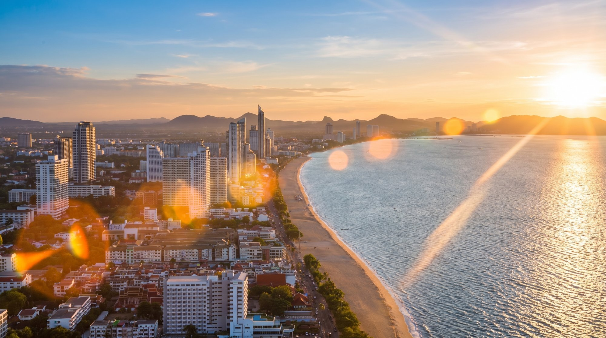
Welcome to November 2026. The rains are easing, the sea breeze is turning cool, and Jomtien is entering the most beautiful stretch of its year. High season is back, with major festivals all month long — from jazz on the beach to international fireworks over Pattaya Bay. On site, Copacabana Coral Reef moves steadily through its finishing phase: facade, interiors and the sky pool. This issue looks at what this high season means for anyone who wants to live, invest or rent by the sea in Jomtien — and opens a new topic more people care about every year: living longer, in good health, and how much the place you call home has to do with it. ต้อนรับเดือนพฤศจิกายน 2569 ฝนเริ่มซา ลมทะเลเริ่มเย็น และจอมเทียนก็เข้าสู่ช่วงที่สวยที่สุดของปี ไฮซีซั่นกลับมาพร้อมเทศกาลใหญ่ตลอดทั้งเดือน ตั้งแต่ดนตรีแจ๊สริมหาด ไปจนถึงพลุนานาชาติเหนืออ่าวพัทยา ขณะเดียวกันที่หน้างาน Copacabana Coral Reef ก็เดินหน้าต่อในระยะงานเก็บรายละเอียด ทั้งเปลือกอาคาร งานภายใน และสระลอยฟ้า ฉบับนี้เราพาไปดูว่าไฮซีซั่นปีนี้หมายถึงอะไรสำหรับคนที่อยากอยู่ ลงทุน หรือปล่อยเช่าริมทะเลจอมเทียน และเปิดหัวข้อใหม่ที่หลายคนให้ความสำคัญมากขึ้นทุกปี — การมีชีวิตที่ยืนยาวอย่างแข็งแรง และบ้านมีส่วนกับเรื่องนี้แค่ไหน 欢迎来到2026年11月。雨季渐歇，海风转凉，中天正步入一年中最美的时节。旺季回归，整月盛事不断——从海滩上的爵士乐，到芭提雅湾上空的国际烟花。与此同时，Copacabana Coral Reef 工地稳步推进收尾阶段：幕墙、室内工程与高空泳池。本期我们将探讨，今年旺季对于想在中天海边居住、投资或出租的人意味着什么；并开启一个越来越受关注的新话题——健康地活得更久，以及「家」在其中扮演的角色。 Добро пожаловать в ноябрь 2026 года. Дожди стихают, морской бриз становится прохладнее, и Джомтьен вступает в самую красивую пору года. Высокий сезон вернулся вместе с крупными фестивалями на весь месяц — от джаза на пляже до международного фейерверка над заливом Паттайи. Тем временем Copacabana Coral Reef уверенно проходит этап отделки: фасад, интерьеры и небесный бассейн. В этом выпуске — что этот высокий сезон значит для тех, кто хочет жить, инвестировать или сдавать жильё у моря в Джомтьене, и новая тема, которая с каждым годом волнует всё больше людей: как прожить дольше и здоровее — и какую роль в этом играет дом.
Living by the sea, walking every day, regular sauna, a real social circle: four habits that research links to longer, healthier lives — and how Copacabana puts each one a lift ride from your door. อยู่ใกล้ทะเล เดินทุกวัน อบซาวน่า และมีสังคม — 4 นิสัยที่งานวิจัยเชื่อมโยงกับชีวิตที่ยืนยาวและแข็งแรง และวิธีที่ Copacabana วางทุกอย่างไว้ห่างจากประตูห้องเพียงลิฟต์ตัวเดียว 临海而居、每日步行、规律桑拿、真实的社交圈——研究将这四种习惯与更长寿、更健康的人生联系在一起；而 Copacabana 让每一项都只在一趟电梯之遥。 Жизнь у моря, ежедневная ходьба, регулярная сауна, живое общение: четыре привычки, которые исследования связывают с более долгой и здоровой жизнью, — и как Copacabana держит каждую из них в одной поездке на лифте от вашей двери.
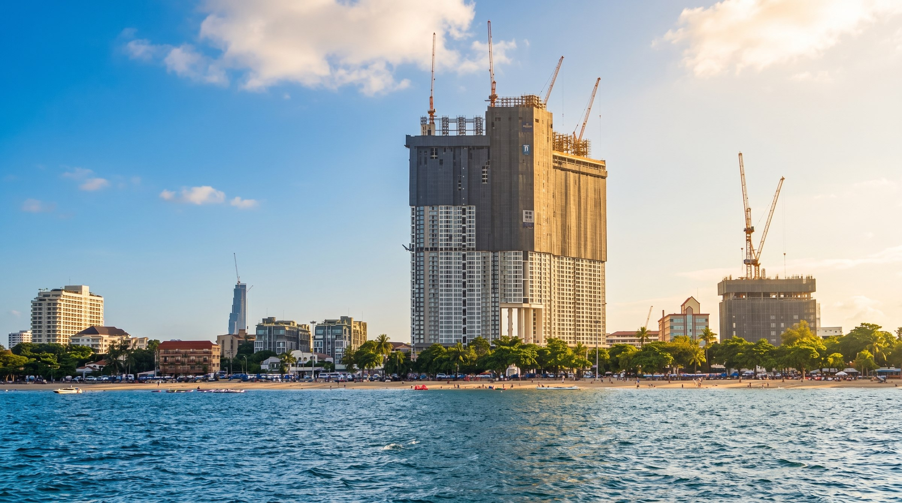

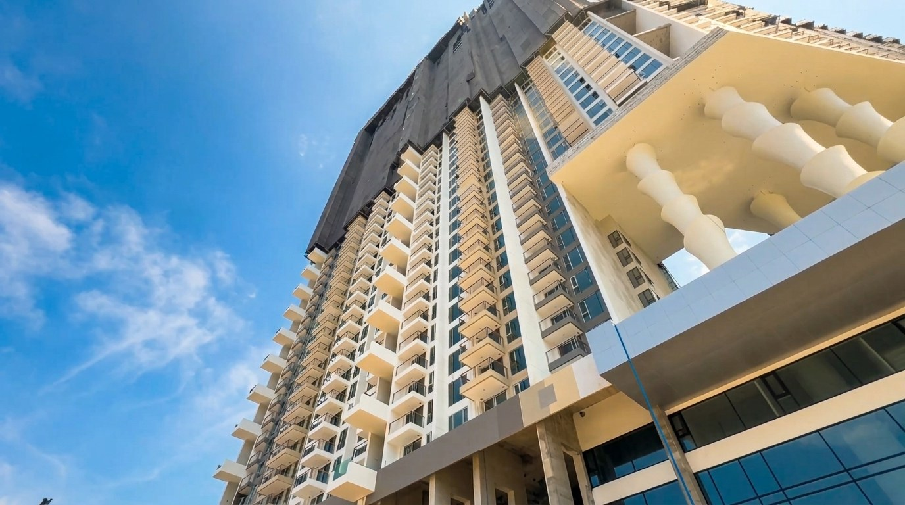
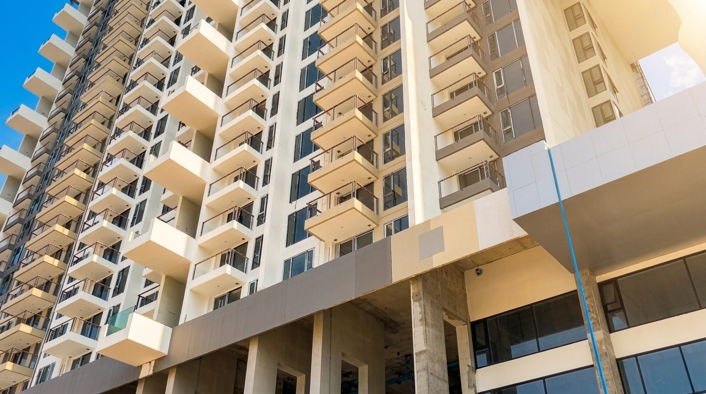

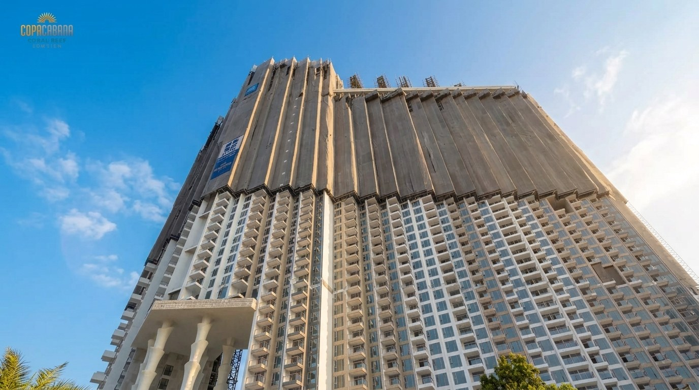

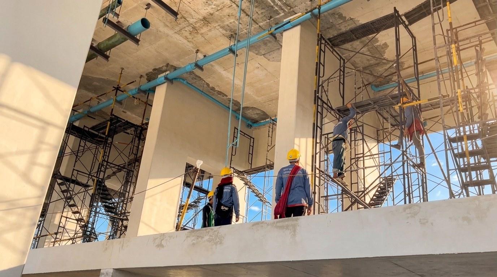
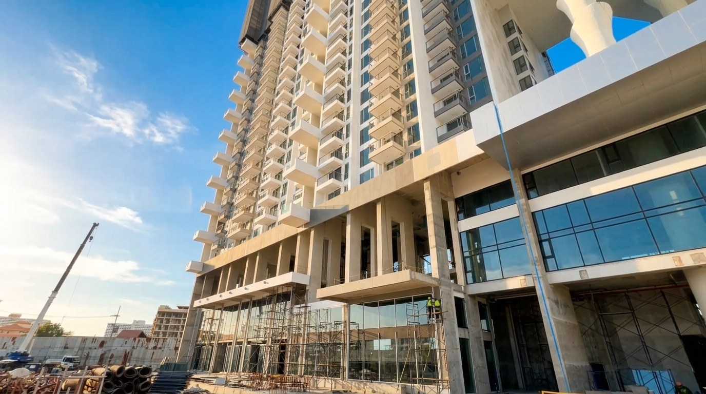
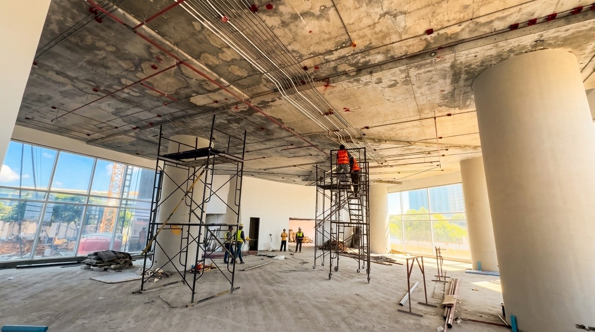

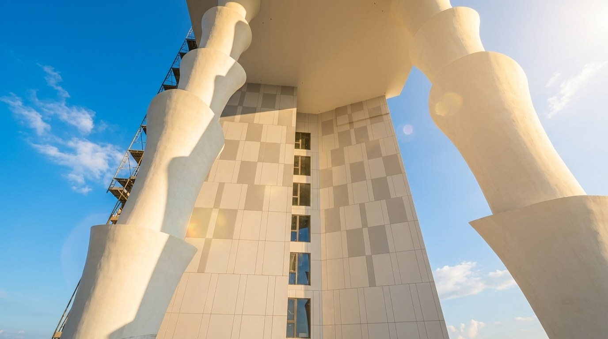

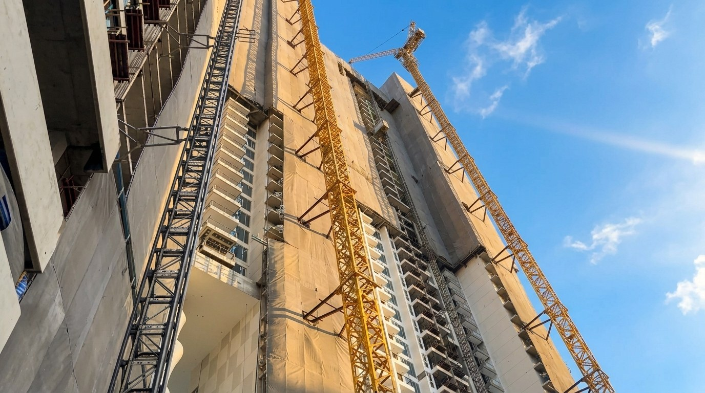

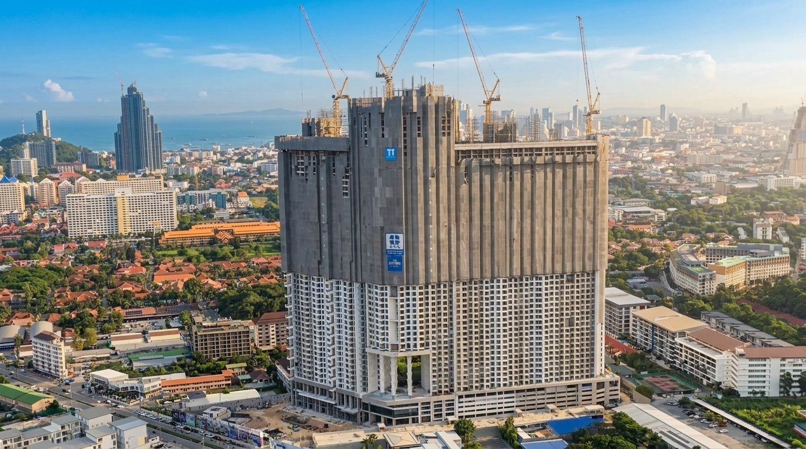

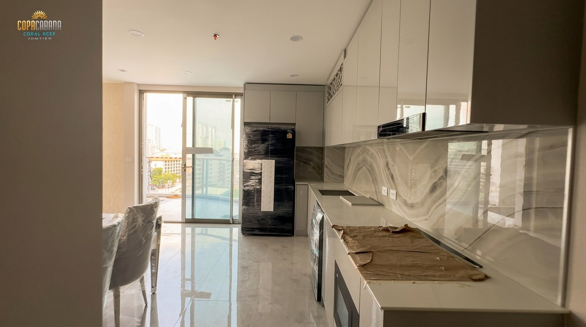

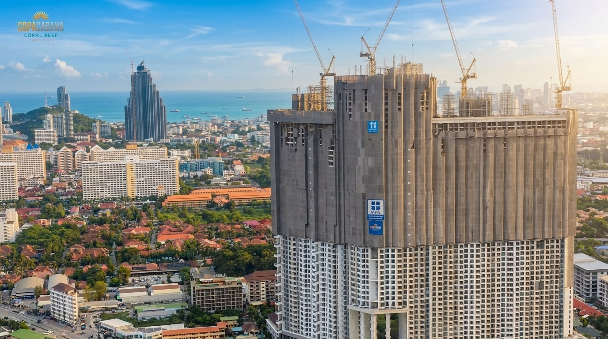

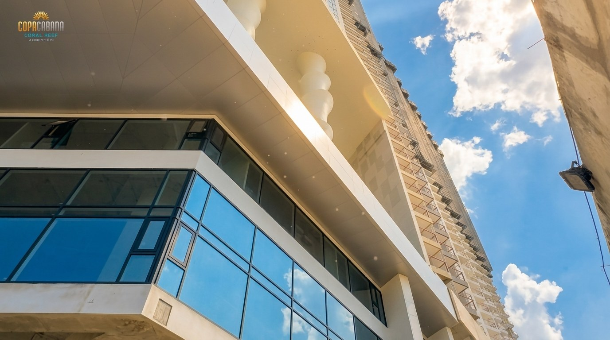
Hover to pause • click any photo to enlarge วางเมาส์เพื่อหยุดภาพ • แตะที่รูปเพื่อดูขนาดเต็ม 悬停暂停 • 点击图片放大 Наведите, чтобы остановить • нажмите, чтобы увеличить
According to the latest site update, the project is advancing clearly and steadily on many fronts. The building’s entire main structure is complete, and electrical engineering systems are now being run floor by floor. On the rooftop, installation and finishing of the crown columns has begun — already revealing the tower’s distinctive architectural identity.
On the exterior, crews have started painting the building in several areas, alongside installing aluminium composite panels that add beauty, a modern look and durability against the weather. Inside the residential units, interior fit-out is now in full swing, and the main furniture has started to arrive in some units — preparing every space to meet the project’s standard.
All of this progress reflects our commitment to quality control at every stage of construction, as we prepare to deliver an exceptional living experience to every resident and investor. Progress continues across the project — stay tuned for our next update.
ก้าวสู่ความจริงที่สมบูรณ์แบบ: รายงานความคืบหน้าโครงการ Copacabana Coral Reef ประจำเดือนพฤศจิกายน 2569 โครงการ Copacabana Coral Reef Jomtien ยังคงเดินหน้างานก่อสร้างอย่างเต็มกำลังตามแผนงาน เพื่อเนรมิตแลนด์มาร์กแห่งการอยู่อาศัยระดับลักชัวรีริมหาดจอมเทียน พัทยา สำหรับเดือนพฤศจิกายนนี้ ตัวอาคารเริ่มเผยโฉมความงดงามและรายละเอียดที่ชัดเจนขึ้นในทุกมิติจากรายงานความคืบหน้าล่าสุด ภาพรวมของโครงการมีความก้าวหน้าอย่างชัดเจนและต่อเนื่องในหลากหลายมิติ งานโครงสร้างหลักของตัวอาคารทั้งหมดดำเนินการเสร็จสมบูรณ์เป็นที่เรียบร้อยแล้ว และกำลังอยู่ในขั้นตอนการเดินระบบวิศวกรรมไฟฟ้าตามแต่ละชั้น ขณะที่บริเวณชั้นดาดฟ้าได้เริ่มงานติดตั้งโครงสร้างและตกแต่งเสามงกุฎด้านบนเป็นที่เรียบร้อย ซึ่งเริ่มเผยให้เห็นเอกลักษณ์ทางสถาปัตยกรรมของอาคารอย่างเด่นชัด
สำหรับงานตกแต่งสถาปัตยกรรมภายนอกอาคาร ทีมช่างได้เริ่มทยอยทาสีตัวอาคารในหลายส่วน ควบคู่ไปกับการติดตั้งแผ่นอะลูมิเนียมคอมโพสิต เพื่อเพิ่มความสวยงาม ทันสมัย และความทนทานต่อสภาพอากาศ ส่วนงานภายในห้องชุดพักอาศัยได้เข้าสู่ขั้นตอนการตกแต่งภายในอย่างเต็มรูปแบบ พร้อมทั้งเริ่มทยอยนำเฟอร์นิเจอร์หลักเข้ามาติดตั้งในบางยูนิตแล้ว เพื่อเตรียมความพร้อมให้ทุกพื้นที่สมบูรณ์แบบตามมาตรฐานของโครงการ
ความคืบหน้าทั้งหมดสะท้อนถึงความมุ่งมั่นในการควบคุมคุณภาพงานก่อสร้างทุกขั้นตอน เพื่อเตรียมส่งมอบประสบการณ์การอยู่อาศัยที่เหนือระดับให้แก่ลูกบ้านและนักลงทุนทุกท่าน ในทุกส่วนกำลังเดินหน้าอย่างต่อเนื่อง แล้วพบกับอัปเดตครั้งต่อไปเร็วๆ นี้ ✨
迈向完美的现实：Copacabana Coral Reef 2026年11月工程进度报告 Copacabana Coral Reef Jomtien 项目正按计划全力推进施工，致力于在芭提雅中天海滩打造一座奢华居住地标。本月，大楼在各个维度都更加清晰地展现出它的美感与细节。根据最新工程进度，项目在多个方面持续取得明显进展。大楼全部主体结构已经完工，目前正逐层进行电气工程系统的敷设；屋顶层的皇冠柱结构安装与装饰工程已经展开，大楼独特的建筑个性日益鲜明。
外部建筑装饰方面，施工团队已在多处开始外墙涂装，同时安装铝复合板，提升美观与现代感，并增强对气候的耐受性。住宅单元内部已全面进入室内装修阶段，部分单元已开始陆续安装主要家具，确保每一处空间都达到项目标准。
所有进展都体现了我们对每一道施工环节严格把控质量的决心，以便为每一位住户与投资者交付卓越的居住体验。各部分工程持续推进，敬请期待下一次更新 ✨
Шаг к завершённой реальности: отчёт о ходе работ Copacabana Coral Reef, ноябрь 2026 Copacabana Coral Reef Jomtien продолжает строительство в полную силу по графику, создавая роскошный жилой ориентир на пляже Джомтьен в Паттайе. В этом ноябре здание всё отчётливее раскрывает свою красоту и детали во всех измерениях.По последнему отчёту, проект уверенно и последовательно продвигается сразу по многим направлениям. Весь основной каркас здания завершён, и сейчас поэтажно прокладываются электротехнические системы. На кровле начаты монтаж и отделка колонн «короны», которые уже раскрывают архитектурный характер башни.
В наружной отделке бригады начали покраску здания на нескольких участках, параллельно монтируя алюминиевые композитные панели — для красоты, современного облика и стойкости к погоде. В жилых юнитах внутренняя отделка идёт в полном объёме, а в части квартир уже начата установка основной мебели, чтобы каждое пространство соответствовало стандартам проекта.
Весь этот прогресс отражает наше стремление контролировать качество на каждом этапе строительства, чтобы подарить каждому жильцу и инвестору исключительный опыт жизни. Работы продолжаются по всему проекту — следите за следующим обновлением ✨
From vision… to reality. จากวิสัยทัศน์… สู่ความเป็นจริง 从愿景… 到现实。 От замысла… к реальности.
From foundation… to the Jomtien skyline. จากรากฐาน… สู่เส้นขอบฟ้าจอมเทียน 从根基… 到中天天际线。 От фундамента… к горизонту Джомтьена.
THE STRUCTURE IS UP
— NOW WE PERFECT THE DETAILS.
More flights, more visitors, a packed calendar of festivals. But local operators say the real question this year is not how many people come — it is how they choose to stay and spend. เที่ยวบินเพิ่ม นักท่องเที่ยวมากขึ้น และปฏิทินเทศกาลที่แน่นตลอดเดือน แต่ผู้ประกอบการในพื้นที่มองว่าคำถามสำคัญของปีนี้ไม่ใช่ว่าจะมีคนมากี่คน — แต่คือพวกเขาเลือกพักแบบไหน และใช้จ่ายอย่างไร 航班更多、游客更多、节庆排满整月。但本地业者认为，今年真正的问题不是来了多少人，而是他们选择怎样入住、怎样消费。 Больше рейсов, больше гостей, плотный календарь фестивалей. Но местные операторы говорят: главный вопрос этого года не в том, сколько людей приедет, а в том, как они выбирают жильё и на что тратят.
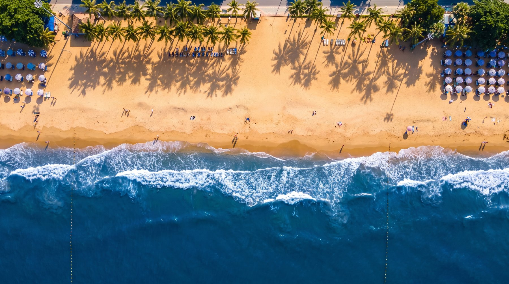
Thai Airways’ 2026/27 winter schedule runs from 25 October 2026 to 27 March 2027 across 66 routes in Asia, Europe and Australia — the months when Jomtien is at its best.ตารางบินฤดูหนาว 2026/27 ของการบินไทย ตั้งแต่ 25 ต.ค. 2569 ถึง 27 มี.ค. 2570 ครอบคลุม 66 เส้นทาง ทั้งเอเชีย ยุโรป และออสเตรเลีย — ตรงกับช่วงเดือนที่จอมเทียนสวยที่สุด泰航2026/27冬季航班自2026年10月25日至2027年3月27日，覆盖亚洲、欧洲与澳洲66条航线——恰是中天最美的几个月。Зимнее расписание Thai Airways 2026/27 действует с 25 октября 2026 по 27 марта 2027 года: 66 маршрутов по Азии, Европе и Австралии — ровно в те месяцы, когда Джомтьен лучше всего.
Pattaya operators say bookings tell only part of the story. Visitors increasingly choose where to stay on convenience, safety, food and local experiences — not just on low prices.ผู้ประกอบการพัทยามองว่ายอดจองบอกได้แค่ส่วนหนึ่ง นักท่องเที่ยวเลือกที่พักจากความสะดวก ความปลอดภัย อาหาร และประสบการณ์ในพื้นที่มากขึ้น ไม่ใช่แค่ราคาถูก芭提雅业者表示，预订量只说明了一部分。游客越来越多地根据便利、安全、美食与在地体验来选择住处，而不只是看低价。Операторы Паттайи говорят, что бронирования отражают лишь часть картины. Гости всё чаще выбирают жильё по удобству, безопасности, еде и местным впечатлениям, а не только по низкой цене.
A home steps from the sand, with resort-style amenities from the wave pool to the sky pool, speaks to exactly the visitor who pays for experience — whether you spend the cool season here yourself or rent in the future.ห้องที่อยู่ห่างชายหาดเพียงไม่กี่ก้าว พร้อมสิ่งอำนวยความสะดวกแบบรีสอร์ต ตั้งแต่ Wave Pool ถึงสระลอยฟ้า ตอบโจทย์นักท่องเที่ยวกลุ่มที่ยอมจ่ายเพื่อประสบการณ์ — ไม่ว่าคุณจะมาใช้ชีวิตหน้าหนาวที่นี่เอง หรือปล่อยเช่าในอนาคต距沙滩仅几步之遥，从造浪池到高空泳池一应俱全的度假式设施，正契合愿意为体验买单的游客——无论您自己来此度过凉季，还是未来出租。Дом в нескольких шагах от песка, с удобствами курортного уровня — от волнового до небесного бассейна, — отвечает запросам именно тех гостей, кто платит за впечатления: проводите ли вы прохладный сезон здесь сами или сдаёте в будущем.
Sources: TAT and Tourism & Sports Ministry figures as reported by Pattaya Mail (26 Sep 2026). Targets are official projections, not guarantees. Nothing here is a promise of rental returns. แหล่งข้อมูล: ตัวเลขจาก ททท. และกระทรวงการท่องเที่ยวและกีฬา ตามรายงานของ Pattaya Mail (26 ก.ย. 2569) ตัวเลขเป้าหมายเป็นการคาดการณ์อย่างเป็นทางการ ไม่ใช่การรับประกัน และไม่ใช่การรับประกันผลตอบแทนค่าเช่า 资料来源：泰国旅游局及旅游体育部数据，据 Pattaya Mail 报道（2026年9月26日）。目标为官方预测，并非保证；本文亦不构成租金回报承诺。 Источники: данные TAT и Министерства туризма и спорта по сообщению Pattaya Mail (26 сент. 2026). Цели — официальные прогнозы, а не гарантии. Ничто здесь не является обещанием арендного дохода.
Which floor suits the cool season best? หน้าหนาวที่จอมเทียน ใช้ชั้นไหนดีที่สุด 中天的凉季，哪一层最惬意？ Какой этаж лучше всего подходит прохладному сезону?
06:30 on the rooftop running track as the first light crosses the bay. Late morning at the Sky Park co-working lounge on level 50. Afternoon laps in the 45-metre sky pool on level 51, or the wave pool at ground level. And when the evening breeze turns cool, the onsen, sauna and steam room on level 6. Here is the whole resort, level by level. 06:30 บนลู่วิ่งดาดฟ้า รับลมเย็นและแสงแรกเหนืออ่าว สายๆ ทำงานที่ Sky Park Co-Working ชั้น 50 บ่ายว่ายน้ำในสระลอยฟ้า 45 เมตร ชั้น 51 หรือ Wave Pool ชั้นล่าง และเมื่อลมเย็นตอนค่ำพัดมา ก็ถึงเวลาออนเซ็น ซาวน่า และห้องอบไอน้ำ ชั้น 6 นี่คือรีสอร์ตทั้งหลัง ไล่ทีละชั้น 清晨6:30，在屋顶跑道上迎着海湾的第一缕晨光。上午在50层空中花园共享办公。午后在51层45米高空泳池或地面造浪池畅游。傍晚海风转凉，便去6层的温泉、桑拿与蒸汽房。以下是整座度假村的逐层导览。 06:30 — беговая дорожка на крыше и первый свет над заливом. Поздним утром — коворкинг Sky Park на 50 этаже. Днём — заплыв в 45-метровом небесном бассейне на 51 этаже или в волновом бассейне внизу. А когда вечерний бриз становится прохладным — онсэн, сауна и хаммам на 6 этаже. Вот весь курорт, уровень за уровнем.
Jomtien Vibe & The Yacht
P = rooftop of the additional 2-storey car parkP = ดาดฟ้าอาคารจอดรถ 2 ชั้นP = 两层附加停车楼屋顶P = крыша дополнительного 2-этажного паркинга
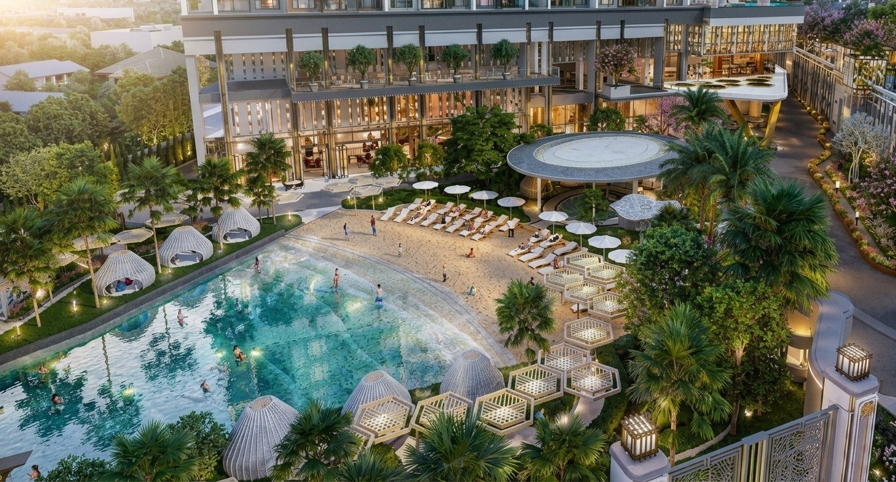
The front-zone showpiece: a sandy-edged wave pool with its own Jacuzzi, a pool bar and beach club, cabanas and tropical gardens — with the real Jomtien Beach just steps away. ไฮไลต์ของโซนด้านหน้า: Wave Pool ขอบหาดทรายพร้อมจากุซซี่ พูลบาร์และ Beach Club ศาลาพักผ่อน และสวนทรอปิคอล — ส่วนหาดจอมเทียนตัวจริงก็อยู่ห่างออกไปเพียงไม่กี่ก้าว 前区的亮点：沙岸造浪池配按摩池、池畔酒吧与海滩俱乐部、休憩凉亭与热带花园——真正的中天海滩也仅数步之遥。 Главная сцена передней зоны: волновой бассейн с песчаным краем и собственным джакузи, пул-бар и пляжный клуб, кабаны и тропический сад — а настоящий пляж Джомтьен в нескольких шагах.
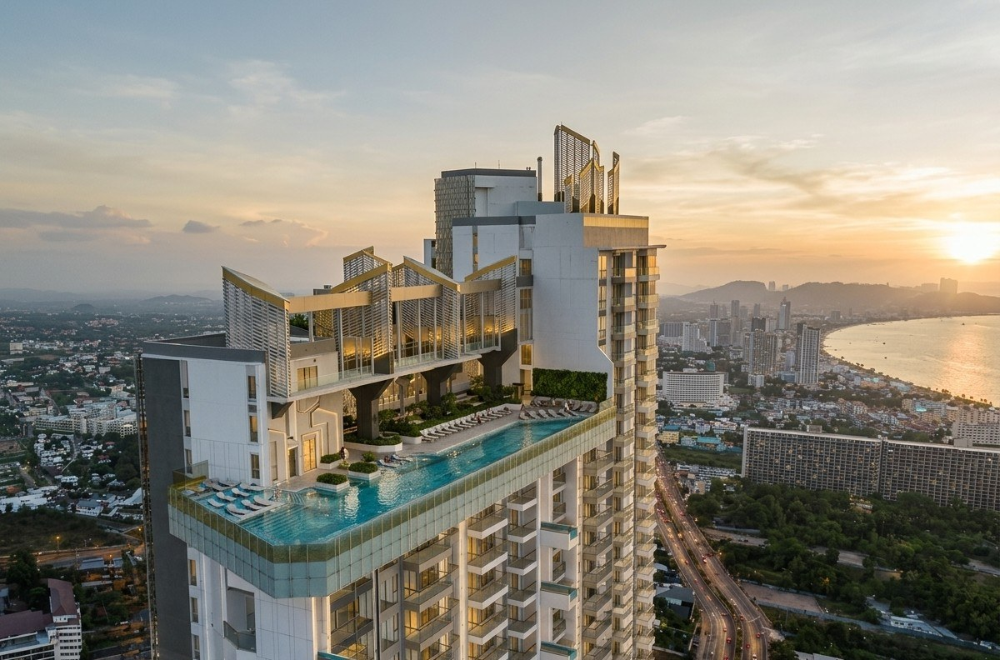
Swim 45 metres along the edge of the sky, with Jomtien Bay stretched out below. The pool that now sits on the topped-out structure is the building’s signature. ว่ายน้ำ 45 เมตรเลียบขอบฟ้า มองลงไปเห็นอ่าวจอมเทียนทอดยาวอยู่ด้านล่าง สระนี้คือซิกเนเจอร์ของอาคาร และตอนนี้ตั้งอยู่บนโครงสร้างที่ขึ้นครบทุกชั้นแล้ว 沿着天际线畅游45米，脚下是绵延的中天湾。这座泳池是整栋大楼的标志，如今已坐落在封顶的主体结构之上。 Плывите 45 метров вдоль края неба, а под вами — залив Джомтьен. Этот бассейн — визитная карточка здания, и теперь он стоит на завершённом каркасе.
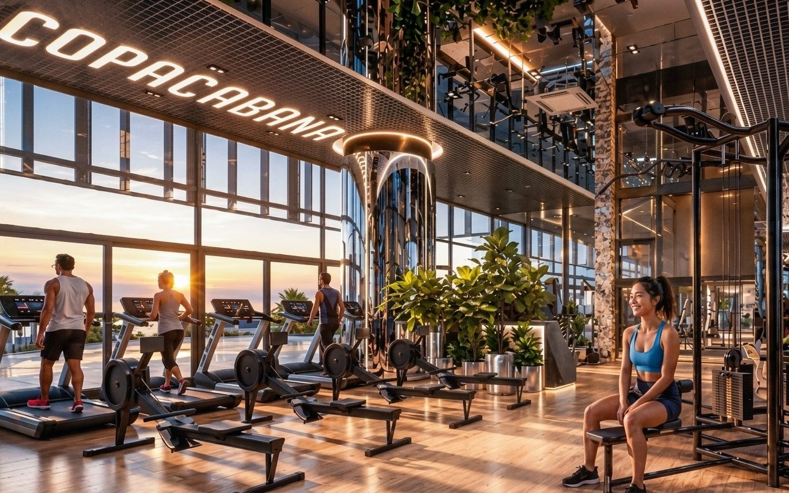
A 487-square-metre gym with an artistic, double-height interior and panoramic views — low enough in the building that a workout never feels like a trip. ฟิตเนสขนาด 487 ตร.ม. ตกแต่งอย่างมีศิลปะ เพดานสูงโปร่ง พร้อมวิวพาโนรามา และอยู่ชั้นต่ำพอที่การลงมาออกกำลังกายไม่รู้สึกเหมือนต้องเดินทาง 487平方米的健身房，艺术感设计、挑高空间与全景视野——楼层够低，下楼训练从不像一趟远行。 Зал площадью 487 м² с художественным интерьером двойной высоты и панорамными видами — достаточно низко, чтобы тренировка не превращалась в поездку.
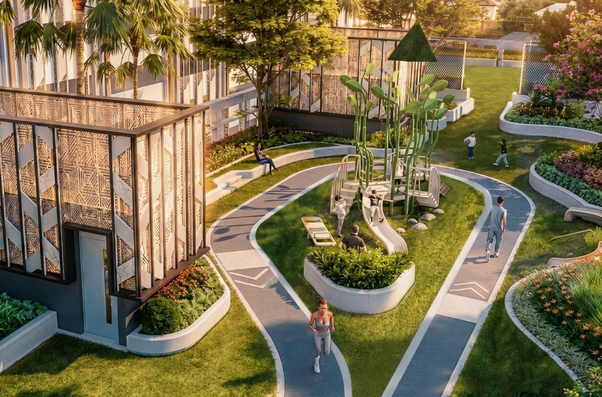
On top of the additional two-storey car park: a landscaped running track looping past a relaxing area and a children’s playground — morning laps while the kids climb. บนดาดฟ้าอาคารจอดรถ 2 ชั้น มีลู่วิ่งท่ามกลางสวนที่วนผ่านมุมพักผ่อนและสนามเด็กเล่น — ผู้ใหญ่วิ่งรอบเช้า เด็กๆ ก็ได้ปีนป่ายไปพร้อมกัน 在附加的两层停车楼屋顶上：一条景观跑道环绕休憩区与儿童游乐场——大人晨跑，孩子攀爬。 На крыше дополнительного двухэтажного паркинга — беговая дорожка среди зелени, зона отдыха и детская площадка: взрослые бегают, дети лазают.
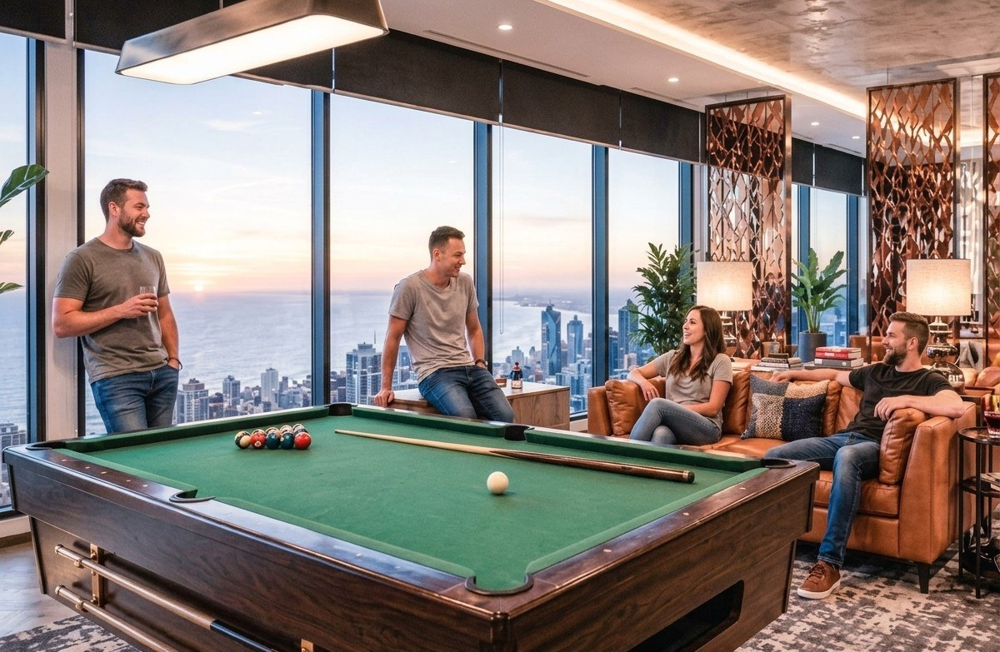
The rooftop Sky Park brings together an entertainment room with a pool table, an elegant lounge, a meeting room, a co-working space and a relaxing garden — all with the city and sea at your back. Sky Park บนดาดฟ้ารวมห้องเอนเตอร์เทนเมนต์พร้อมโต๊ะพูล เลานจ์หรูหรา ห้องประชุม Co-Working Space และสวนพักผ่อนไว้ในชั้นเดียว โดยมีวิวเมืองและทะเลเป็นฉากหลัง 屋顶空中花园汇集娱乐室（配台球桌）、优雅休息厅、会议室、共享办公区与休闲花园——城市与海景尽在身后。 Sky Park на крыше объединяет комнату развлечений с бильярдом, элегантный лаунж, переговорную, коворкинг и сад для отдыха — с видом на город и море.
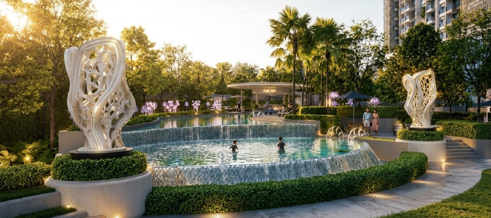
The calmer rear zone: a sculpted garden pool, a children’s pool, a multi-purpose lawn and a dedicated Kids’ Club — family time without leaving the grounds. โซนด้านหลังที่สงบกว่า มี Garden Pool ประดับประติมากรรม สระเด็ก สนามหญ้าอเนกประสงค์ และ Kids’ Club — ใช้เวลากับครอบครัวได้เต็มที่โดยไม่ต้องออกนอกโครงการ 更宁静的后区：雕塑花园泳池、儿童泳池、多功能草坪与专属儿童俱乐部——不出园区就能享受家庭时光。 Более спокойная задняя зона: садовый бассейн со скульптурами, детский бассейн, лужайка и отдельный детский клуб — семейное время, не выходя за ворота.
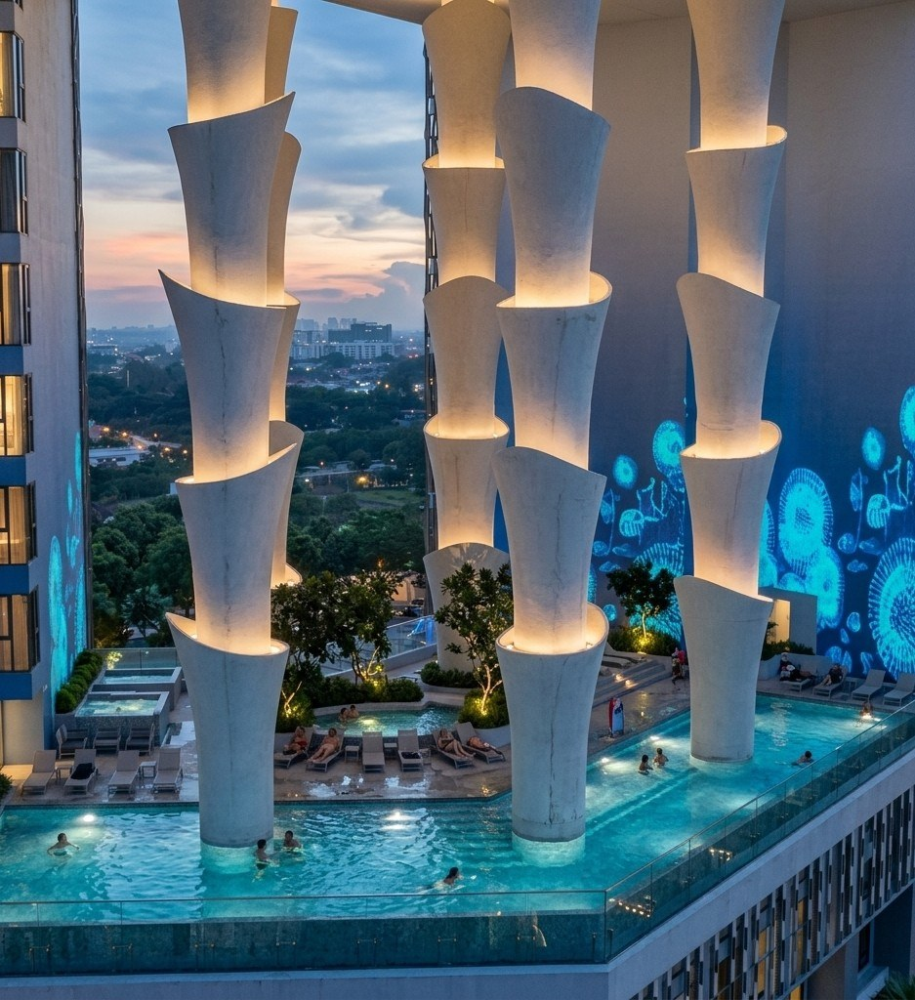
The building’s namesake: a pool framed by towering coral-inspired columns and glowing sea-life walls, with its own Jacuzzi — the quiet heart of the wellness floor. สระที่เป็นที่มาของชื่อโครงการ ล้อมรอบด้วยเสาสูงที่ได้แรงบันดาลใจจากปะการัง และผนังเรืองแสงลวดลายสิ่งมีชีวิตใต้ทะเล พร้อมจากุซซี่ในตัว — หัวใจอันเงียบสงบของชั้นสุขภาพ 项目的名字由此而来：高耸的珊瑚造型立柱与发光的海洋生物墙环绕泳池，并配有按摩池——康养楼层宁静的核心。 Бассейн, давший имя проекту: высокие колонны в форме кораллов, светящиеся стены с морскими мотивами и собственный джакузи — тихое сердце велнес-этажа.

An authentic Japanese-style onsen beside the Coral Pool’s Jacuzzi — the place to let the day go. ออนเซ็นสไตล์ญี่ปุ่นแบบต้นตำรับ อยู่ติดกับจากุซซี่ของ The Coral Pool — มุมที่ปล่อยให้ความเหนื่อยทั้งวันละลายหายไป 正宗日式温泉紧邻珊瑚泳池的按摩池——放下一天疲惫的地方。 Настоящий онсэн в японском стиле рядом с джакузи The Coral Pool — место, где отпускает весь день.
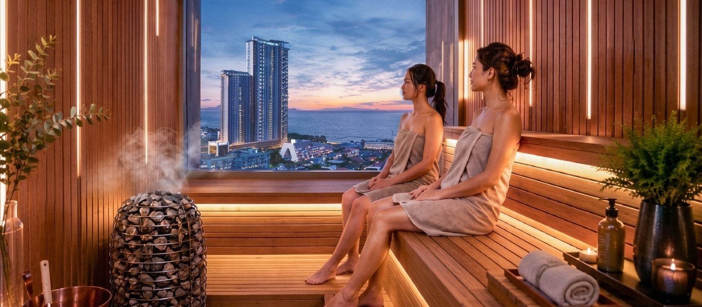
Warm timber, soft light and a window onto the sea: a sauna and steam room to finish every session. ไม้โทนอุ่น แสงนุ่ม และหน้าต่างที่มองเห็นทะเล ห้องซาวน่าและห้องอบไอน้ำสำหรับปิดท้ายทุกวัน 温润木质、柔和灯光，窗外是大海：以桑拿与蒸汽房为每一天收尾。 Тёплое дерево, мягкий свет и окно на море: сауна и хаммам, чтобы завершить любой день.
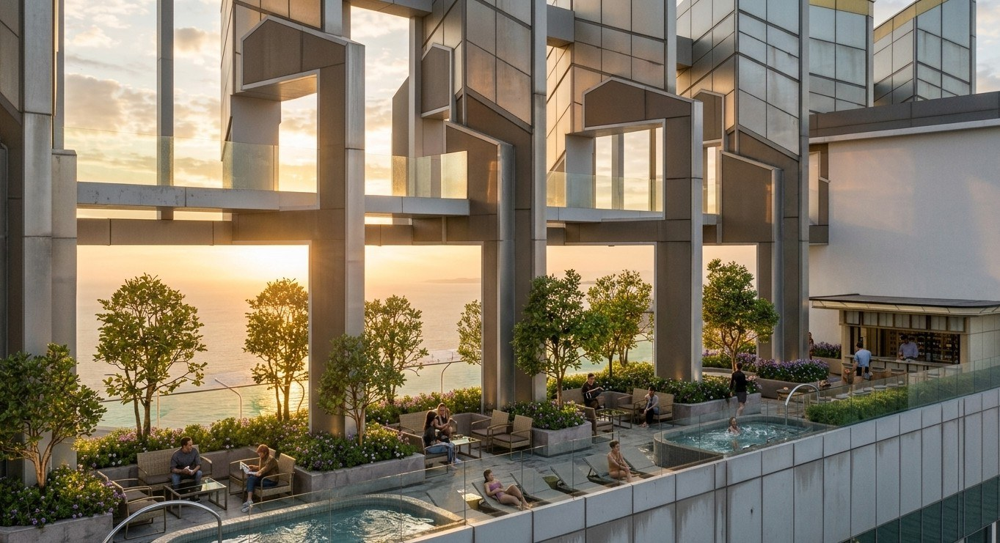
Beside the lap pool, a bar and Jacuzzis face west over the Gulf — built for the hour when Jomtien turns gold. ข้างสระ Lap Pool มีบาร์และจากุซซี่หันหน้าไปทางทิศตะวันตกเหนืออ่าวไทย สร้างมาเพื่อช่วงเวลาที่จอมเทียนกลายเป็นสีทอง 在泳池旁，酒吧与按摩池面朝西方的泰国湾——专为中天染上金色的那一刻而建。 Рядом с бассейном — бар и джакузи с видом на запад, на залив: для того часа, когда Джомтьен становится золотым.

Thirty-two green pockets spread through the building, so there is always somewhere quiet within a short walk of your door. พื้นที่สีเขียว 32 จุดกระจายอยู่ทั่วอาคาร ไม่ว่าจะอยู่ชั้นไหน ก็มีมุมสงบให้พักได้ในระยะเดินไม่ไกลจากหน้าห้อง 32处绿意空间分布于整栋大楼，无论住在哪一层，走几步就有安静的角落。 Тридцать два зелёных уголка по всему зданию — где бы вы ни жили, тихое место всегда рядом.
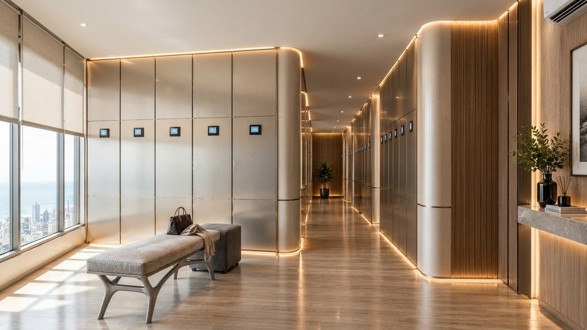
24-hour security and concierge, smart parcel lockers, 14 elevators from a grand high-ceiling lobby, and free Wi-Fi in every common area. รปภ.และ Concierge ตลอด 24 ชั่วโมง ตู้ล็อกเกอร์รับพัสดุอัจฉริยะ ลิฟต์ 14 ตัวจากล็อบบี้เพดานสูงโอ่อ่า และ Wi-Fi ฟรีในทุกพื้นที่ส่วนกลาง 24小时安保与礼宾服务、智能包裹储物柜、宏伟挑高大堂配14部电梯，以及所有公共区域免费Wi-Fi。 Охрана и консьерж 24/7, смарт-локеры для посылок, 14 лифтов из высокого парадного лобби и бесплатный Wi-Fi во всех общих зонах.
Images are enhanced from the October 2026 brochure renderings for illustration and may differ from the finished building. ภาพปรับแต่งจากภาพจำลองในโบรชัวร์ฉบับตุลาคม 2569 เพื่อสื่อบรรยากาศ และอาจแตกต่างจากอาคารจริงเมื่อแล้วเสร็จ 图片根据2026年10月宣传册效果图优化处理，仅供参考，可能与竣工实景有所不同。 Изображения улучшены на основе визуализаций из брошюры за октябрь 2026 года и могут отличаться от готового здания.
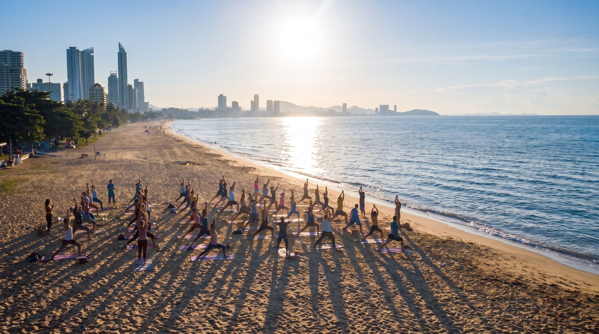
Research suggests that what surrounds us every day — the sea, the paths we walk, heat, and people — matters more to long-term health than we think. งานวิจัยชี้ว่าสิ่งที่อยู่รอบตัวเราทุกวัน — ทะเล ทางเดิน ความร้อน และผู้คน — มีผลต่อสุขภาพในระยะยาวมากกว่าที่คิด 研究表明，我们每天身处的环境——大海、步道、热疗与人群——对长期健康的影响超乎想象。 Исследования показывают: то, что окружает нас каждый день — море, дорожки, тепло и люди, — влияет на здоровье в долгосрочной перспективе сильнее, чем кажется.
In recent years, healthspan — the years we live in good health — has become as important as lifespan. The question is no longer only how long we live, but how many years we stay strong, active and independent. Thailand itself is positioning as the region’s longevity destination. Yet what shapes health most rarely happens in a clinic: it comes from small routines repeated every day — and those routines begin at home. ช่วงหลายปีที่ผ่านมา คำว่า Healthspan หรือ “ช่วงชีวิตที่สุขภาพดี” เริ่มสำคัญไม่แพ้ Lifespan คำถามไม่ใช่แค่เราจะอยู่ได้นานแค่ไหน แต่คือจะใช้ชีวิตได้เต็มที่ แข็งแรง และพึ่งพาตัวเองได้ไปอีกกี่ปี ประเทศไทยเองก็กำลังวางตำแหน่งเป็นจุดหมายด้าน Longevity ของภูมิภาค แต่สิ่งที่ส่งผลต่อสุขภาพมากที่สุดไม่ได้เกิดในคลินิก — มันเกิดจากกิจวัตรเล็กๆ ที่ทำซ้ำทุกวัน และกิจวัตรเหล่านั้นเริ่มต้นที่บ้าน 近年来，健康寿命（healthspan）——即健康生活的年数——已变得与寿命（lifespan）同等重要。问题不再只是能活多久，而是能保持强健、活跃与自理多少年。泰国本身也正将自己定位为区域长寿目的地。但最影响健康的事很少发生在诊所里，而是来自每天重复的小习惯——而这些习惯，始于家中。 В последние годы healthspan — годы, прожитые в добром здоровье, — стал так же важен, как lifespan. Вопрос уже не только в том, сколько мы проживём, но и в том, сколько лет останемся сильными, активными и самостоятельными. Таиланд позиционирует себя как направление долголетия в регионе. Но больше всего на здоровье влияет не клиника, а маленькие ежедневные ритуалы — и они начинаются дома.
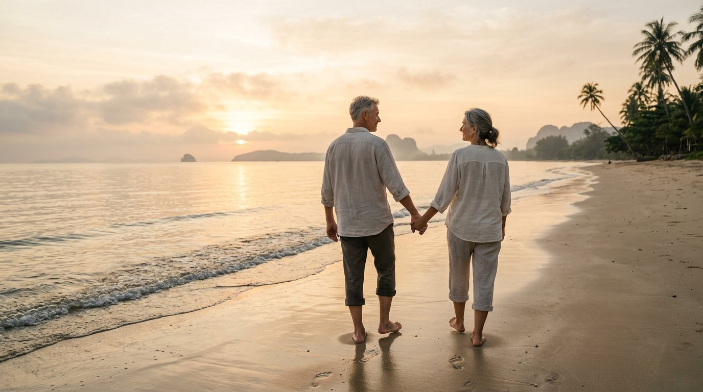
1The researchงานวิจัย研究发现ИсследованиеA University of Exeter study of nearly 26,000 people in England found that those living closer to the coast reported better mental health — and more walking was one of the key links.การศึกษาจาก University of Exeter (ผู้ตอบเกือบ 26,000 คนในอังกฤษ) พบว่าผู้ที่อยู่ใกล้ชายฝั่งรายงานสุขภาพจิตดีกว่า และการเดินที่มากขึ้นเป็นหนึ่งในตัวเชื่อมสำคัญ英国埃克塞特大学一项涵盖近26,000人的研究发现，住得离海岸越近的人自述心理健康越好——而更多的步行是关键关联之一。Исследование Университета Эксетера (почти 26 000 человек в Англии) показало: живущие ближе к побережью сообщают о лучшем психическом здоровье — и одна из ключевых связей — больше ходьбы.
CopacabanaSea-view homes, balconies you actually sit on, and Jomtien Beach just a few steps away.ห้องวิวทะเล ระเบียงที่นั่งได้จริง และหาดจอมเทียนห่างเพียงไม่กี่ก้าว海景住宅、真正可以坐下来的阳台，中天海滩仅几步之遥。Квартиры с видом на море, балконы, на которых действительно сидят, и пляж Джомтьен в нескольких шагах.
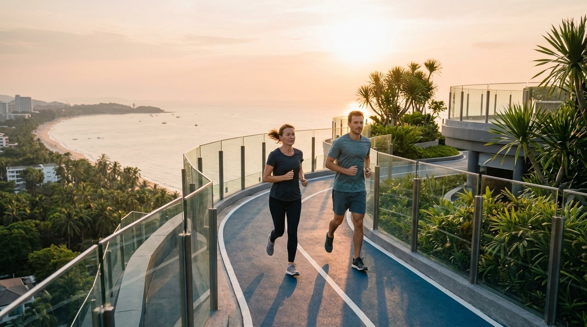
2The researchงานวิจัย研究发现ИсследованиеA meta-analysis of 15 cohorts (47,471 adults, The Lancet Public Health, 2022) found mortality risk fell as daily steps rose, levelling off at about 6,000–8,000 steps for adults 60+ and 8,000–10,000 for younger adults.Meta-analysis 15 กลุ่มประชากร (47,471 คน, The Lancet Public Health, 2022) พบว่าความเสี่ยงเสียชีวิตลดลงเมื่อเดินมากขึ้น โดยประโยชน์เริ่มคงที่ราว 6,000–8,000 ก้าว/วัน สำหรับผู้อายุ 60 ปีขึ้นไป และ 8,000–10,000 ก้าว สำหรับผู้ที่อายุน้อยกว่า一项汇总15个队列（47,471名成人，《柳叶刀·公共卫生》，2022）的荟萃分析发现，死亡风险随每日步数增加而下降，60岁以上约在6,000–8,000步、较年轻者约在8,000–10,000步趋于平稳。Метаанализ 15 когорт (47 471 взрослый, The Lancet Public Health, 2022) показал: риск смертности снижается с ростом числа шагов и выходит на плато около 6 000–8 000 шагов для людей 60+ и 8 000–10 000 — для более молодых.
CopacabanaRooftop running track, a high-ceiling gym on level 3, the 45-m lap pool on level 51, 32 garden spots and the beachfront promenade.ลู่วิ่งบนดาดฟ้า ฟิตเนสเพดานสูงชั้น 3 สระ Lap Pool 45 ม. ชั้น 51 สวนส่วนกลาง 32 จุด และทางเดินเลียบหาด屋顶跑道、3层挑高健身房、51层45米泳池、32处花园以及海滨步道。Беговая дорожка на крыше, зал с высокими потолками на 3 этаже, 45-метровый бассейн на 51 этаже, 32 садовых уголка и набережная.
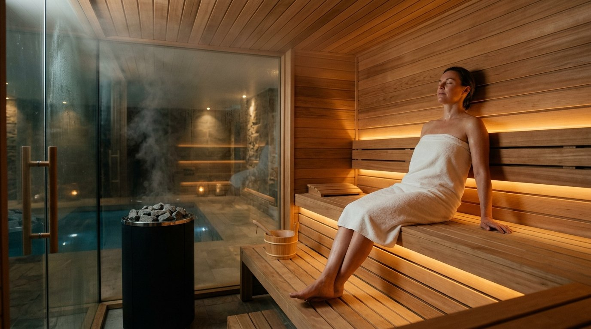
3The researchงานวิจัย研究发现ИсследованиеA long-term Finnish study (2,315 men followed for about 20 years, JAMA Internal Medicine, 2015) found that men who used a sauna 4–7 times a week had a 63% lower risk of sudden cardiac death than those who went once a week.การศึกษาระยะยาวในฟินแลนด์ (ชาย 2,315 คน ติดตามราว 20 ปี, JAMA Internal Medicine, 2015) พบว่าผู้ที่อบซาวน่า 4–7 ครั้งต่อสัปดาห์ มีความเสี่ยงเสียชีวิตจากภาวะหัวใจหยุดเต้นเฉียบพลันต่ำกว่ากลุ่มที่อบสัปดาห์ละครั้ง 63%芬兰一项长期研究（2,315名男性，随访约20年，《美国医学会杂志·内科学》，2015）发现，每周桑拿4–7次者的心源性猝死风险比每周一次者低63%。Долгосрочное финское исследование (2 315 мужчин, около 20 лет наблюдения, JAMA Internal Medicine, 2015): у посещавших сауну 4–7 раз в неделю риск внезапной сердечной смерти был на 63% ниже, чем у ходивших раз в неделю.
CopacabanaOnsen on level 6, sauna, steam room and Jacuzzi — every day, without leaving the building.ออนเซ็นชั้น 6 ซาวน่า ห้องอบไอน้ำ และจากุซซี่ — ใช้ได้ทุกวันโดยไม่ต้องออกจากอาคาร6层温泉、桑拿、蒸汽房与按摩池——每天都能享用，无需离开大楼。Онсэн на 6 этаже, сауна, хаммам и джакузи — каждый день, не выходя из здания.
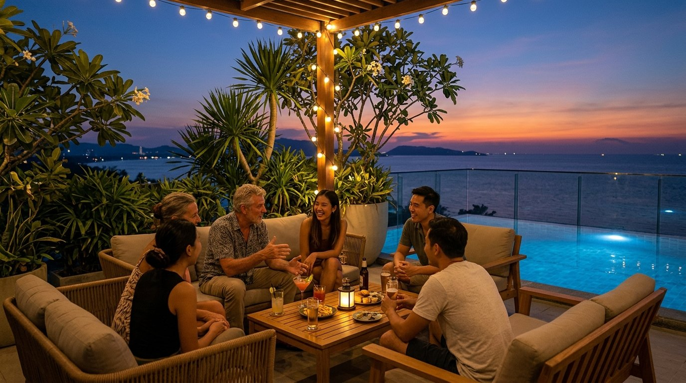
4The researchงานวิจัย研究发现ИсследованиеA meta-analysis of 148 studies (over 300,000 people, PLOS Medicine, 2010) found that people with stronger social relationships had about a 50% greater likelihood of survival over the follow-up period.Meta-analysis 148 งานวิจัย (กว่า 300,000 คน, PLOS Medicine, 2010) พบว่าผู้ที่มีความสัมพันธ์ทางสังคมแข็งแรง มีโอกาสรอดชีวิตในช่วงติดตามผลสูงขึ้นราว 50%一项汇总148项研究（逾30万人，《PLOS Medicine》，2010）的荟萃分析发现，社会关系更紧密的人在随访期内的存活可能性高出约50%。Метаанализ 148 исследований (более 300 000 человек, PLOS Medicine, 2010): у людей с крепкими социальными связями вероятность выживания за период наблюдения была примерно на 50% выше.
CopacabanaSky Park co-working and the entertainment room on level 50, the Beach Club at ground level and shared pools — places where meeting your neighbours happens naturally.Sky Park Co-Working และห้องเอนเตอร์เทนเมนต์ชั้น 50, Beach Club ชั้น G และสระส่วนกลาง — พื้นที่ที่ทำให้การเจอเพื่อนบ้านเกิดขึ้นเองตามธรรมชาติ50层空中花园共享办公与娱乐室、地面层海滩俱乐部以及公共泳池——在这里，结识邻居自然而然。Коворкинг Sky Park и зал развлечений на 50 этаже, Beach Club на первом этаже и общие бассейны — места, где знакомство с соседями происходит само собой.
Copacabana Coral Reef is not a clinic, and we do not promise anyone a longer life. But when the sea, the running track, the sauna and your neighbours are all a single lift ride from your door, good habits become the easy choice every day — and that is what healthspan needs most. Copacabana Coral Reef ไม่ใช่คลินิก และเราไม่ได้สัญญาว่าจะทำให้ใครอายุยืนขึ้น แต่เมื่อทะเล ลู่วิ่ง ซาวน่า และผู้คน อยู่ห่างจากประตูห้องเพียงลิฟต์ตัวเดียว นิสัยดีๆ ก็กลายเป็นเรื่องง่ายที่ทำได้ทุกวัน — และนั่นคือสิ่งที่ Healthspan ต้องการที่สุด Copacabana Coral Reef 不是诊所，我们也不承诺让任何人更长寿。但当大海、跑道、桑拿与邻居都只在一趟电梯之遥，好习惯便成了每天轻松的选择——而这正是健康寿命最需要的。 Copacabana Coral Reef — не клиника, и мы никому не обещаем более долгую жизнь. Но когда море, беговая дорожка, сауна и соседи — в одной поездке на лифте от вашей двери, хорошие привычки становятся лёгким ежедневным выбором — а именно это и нужно healthspan.
Thailand is promoting healthspan-focused longevity tourism; medical visas now allow stays of up to 90 days with multiple entries.ประเทศไทยกำลังผลักดัน Longevity Tourism ที่เน้น Healthspan โดยวีซ่าเพื่อการรักษาพยาบาลอนุญาตให้พำนักได้สูงสุด 90 วัน และเข้า–ออกได้หลายครั้ง泰国正推动以健康寿命为核心的长寿旅游；医疗签证现可停留最长90天并多次入境。Таиланд продвигает туризм долголетия с фокусом на healthspan; медицинская виза теперь позволяет находиться до 90 дней с многократным въездом.
thailand.go.th →Thailand as a new healthspan destination, the four evidence-based dimensions — Blue Space, Move Daily, Heat & Recovery, Human Connection — and why healthspan is Tier 01 on the path to Longevity Escape Velocity.ประเทศไทยในฐานะหมุดหมายใหม่ของ Healthspan, 4 มิติจากหลักฐานวิจัย — Blue Space, Move Daily, Heat & Recovery, Human Connection — และทำไม Healthspan จึงเป็น Tier 01 ของเส้นทางสู่ Longevity Escape Velocity泰国作为健康寿命新目的地、四大循证维度——蓝色空间、每日运动、热疗与恢复、人际联结——以及为何健康寿命是通往「长寿逃逸速度」的第一层级。Таиланд как новое направление healthspan, четыре научно обоснованных измерения — Blue Space, Move Daily, Heat & Recovery, Human Connection, — и почему healthspan — это Tier 01 на пути к Longevity Escape Velocity.
All studies cited are observational: they show associations, not proof of cause and effect. This section is for general information and is not medical advice. If you have a heart condition or high blood pressure, please consult your doctor before using a sauna. Sources: University of Exeter (Health & Place; Environment International); Paluch et al., The Lancet Public Health 2022; Laukkanen et al., JAMA Internal Medicine 2015; Holt-Lunstad et al., PLOS Medicine 2010. งานวิจัยทั้งหมดที่อ้างถึงเป็นการศึกษาเชิงสังเกต แสดงความเชื่อมโยง ไม่ใช่การพิสูจน์เหตุและผล เนื้อหานี้เป็นข้อมูลทั่วไป ไม่ใช่คำแนะนำทางการแพทย์ ผู้มีโรคหัวใจหรือความดันโลหิตสูงควรปรึกษาแพทย์ก่อนใช้ซาวน่า แหล่งข้อมูล: University of Exeter (Health & Place; Environment International); Paluch et al., The Lancet Public Health 2022; Laukkanen et al., JAMA Internal Medicine 2015; Holt-Lunstad et al., PLOS Medicine 2010 所引研究均为观察性研究，显示的是关联而非因果证明。本节仅供一般参考，不构成医疗建议。如有心脏病或高血压，使用桑拿前请先咨询医生。资料来源：埃克塞特大学（Health & Place；Environment International）；Paluch 等，《柳叶刀·公共卫生》2022；Laukkanen 等，《JAMA Internal Medicine》2015；Holt-Lunstad 等，《PLOS Medicine》2010。 Все цитируемые исследования наблюдательные: они показывают связь, а не доказывают причину и следствие. Раздел носит информационный характер и не является медицинской рекомендацией. При болезнях сердца или повышенном давлении проконсультируйтесь с врачом перед посещением сауны. Источники: Университет Эксетера (Health & Place; Environment International); Paluch и соавт., The Lancet Public Health 2022; Laukkanen и соавт., JAMA Internal Medicine 2015; Holt-Lunstad и соавт., PLOS Medicine 2010.
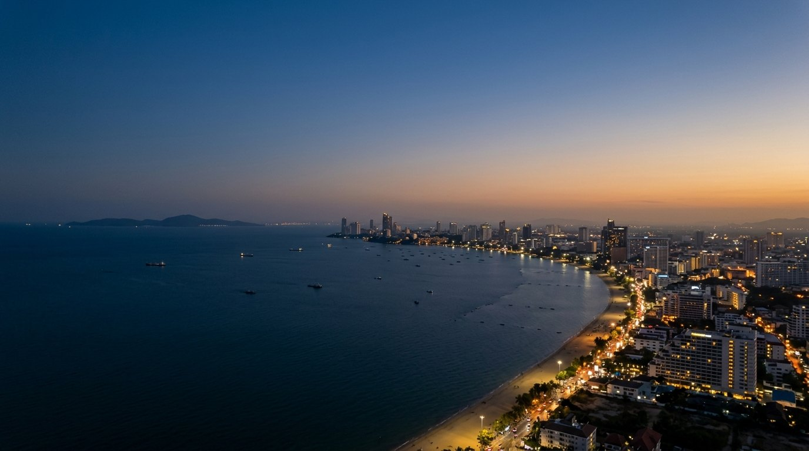
In Parts 1 and 2 we looked at Jomtien’s ground, water, wind and sea. Part 3 zooms out to overall safety: a region that is not only resilient to natural hazards and growing into a world-class economic zone, but also a place globally mobile, high-income people are now considering as a new base — because Thailand keeps a non-aligned, balanced foreign policy among the major powers. ตอนที่ 1 และ 2 เราพาไปดูพื้นดิน น้ำ ลม และทะเลของจอมเทียน ตอนที่ 3 นี้ขยายภาพสู่ความปลอดภัยโดยรวม จอมเทียนและ EEC ไม่ได้มีแค่ความแข็งแรงต่อภัยธรรมชาติ หรือกำลังเติบโตเป็นพื้นที่เศรษฐกิจระดับ World Class เท่านั้น แต่ยังเป็นที่ที่คนรายได้สูงจากทั่วโลกเริ่มมองเป็นฐานชีวิตแห่งใหม่ เพราะไทยวางตัวเป็นกลาง ไม่เลือกข้างมหาอำนาจใด 第一、二篇我们探讨了中天的地质、水文、风与海。第三篇放眼整体安全：中天与EEC不仅具备抵御自然灾害的韧性、正成长为世界级经济区，更是全球高收入人群开始考虑的新安居之地——因为泰国在大国之间奉行中立、平衡的外交政策。 В частях 1 и 2 мы разбирали грунт, воду, ветер и море Джомтьена. Часть 3 — об общей безопасности: регион не только устойчив к природным рискам и растёт в экономическую зону мирового уровня, но и становится местом, которое состоятельные люди со всего мира рассматривают как новую базу, — ведь Таиланд придерживается неприсоединения и баланса между великими державами.
Covered in Parts 1–2: geology, drainage, coast and storms.ครอบคลุมในตอนที่ 1–2: ธรณีวิทยา การระบายน้ำ ชายฝั่ง และพายุ见第一、二篇：地质、排水、海岸与风暴。Части 1–2: геология, дренаж, побережье и штормы.
BOI investment applications above ฿1.8 trillion; 1st in ASEAN for data-centre investment.คำขอรับส่งเสริมการลงทุน BOI เกิน 1.8 ล้านล้านบาท และอันดับ 1 อาเซียนด้านการลงทุน Data CenterBOI投资申请逾1.8万亿泰铢；数据中心投资吸引力东盟第一。Заявки в BOI свыше 1,8 трлн бат; 1-е место в АСЕАН по инвестициям в дата-центры.
At WEF 2026, Thailand positioned itself as a neutral, non-conflicting partner amid global polarisation.ที่เวที WEF 2026 ไทยวางตำแหน่งเป็นพันธมิตรที่เป็นกลางและไม่ขัดแย้งกับใคร ท่ามกลางโลกที่แบ่งขั้ว在2026年达沃斯论坛上，泰国在全球分化中将自身定位为中立、无冲突的合作伙伴。На WEF 2026 Таиланд позиционировал себя как нейтральный, неконфликтный партнёр в поляризованном мире.
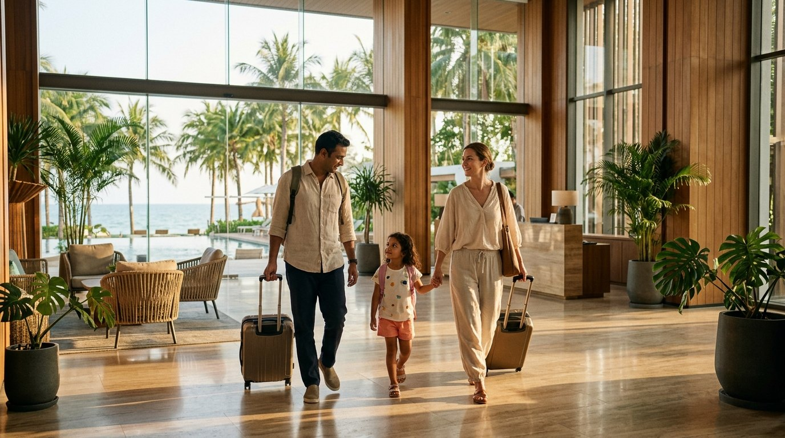
The LTR programme’s largest groups are Wealthy Pensioners (4,561) and Highly-Skilled Professionals (1,779), with 54% of the professionals in executive roles. Their needs match what Jomtien offers: an international airport nearby at U-Tapao, a growing EEC job market, resort-level living by the sea and the cost of living expats rate as the best in the world. In a year when private wealth is on the move globally, the region’s appeal is not only natural safety but stability.กลุ่มใหญ่ที่สุดของผู้ถือวีซ่า LTR คือ Wealthy Pensioners (4,561 คน) และ Highly-Skilled Professionals (1,779 คน) โดย 54% ของกลุ่มมืออาชีพอยู่ในระดับผู้บริหาร ความต้องการของคนกลุ่มนี้ตรงกับสิ่งที่จอมเทียนมี: สนามบินนานาชาติอู่ตะเภาใกล้ๆ ตลาดงาน EEC ที่เติบโต ชีวิตระดับรีสอร์ตริมทะเล และค่าครองชีพที่ชาวต่างชาติให้คะแนนดีที่สุดในโลก ในปีที่ความมั่งคั่งทั่วโลกกำลังเคลื่อนย้าย เสน่ห์ของพื้นที่นี้จึงไม่ใช่แค่ความปลอดภัยทางธรรมชาติ แต่คือ “ความมั่นคง”LTR签证最大的群体是富裕退休人士（4,561人）与高技能专业人士（1,779人），其中54%的专业人士担任高管职位。他们的需求与中天所能提供的高度契合：邻近乌塔堡国际机场、不断增长的EEC就业市场、海滨度假式生活，以及外籍人士评为全球最佳的生活成本。在全球私人财富流动的这一年，这里的吸引力不仅是自然安全，更是稳定。Крупнейшие группы LTR — состоятельные пенсионеры (4 561) и высококвалифицированные специалисты (1 779), 54% из которых — руководители. Их запросы совпадают с тем, что даёт Джомтьен: международный аэропорт У-Тапао рядом, растущий рынок труда EEC, курортная жизнь у моря и стоимость жизни, которую экспаты оценивают как лучшую в мире. В год, когда частный капитал по всему миру в движении, привлекательность региона — не только природная безопасность, но и стабильность.
Sources: BOI press release No. 175/2569 (5 Oct 2026); Thailand.go.th, “Thailand Asserts Strategic Neutrality… at WEF 2026” (13 Mar 2026); InterNations Expat Insider 2026. Official and survey figures are shown as reported. For information only — not investment or immigration advice. แหล่งข้อมูล: ข่าวประชาสัมพันธ์ BOI ฉบับที่ 175/2569 (5 ต.ค. 2569); Thailand.go.th “Thailand Asserts Strategic Neutrality… at WEF 2026” (13 มี.ค. 2569); InterNations Expat Insider 2026 ตัวเลขทางการและผลสำรวจแสดงตามที่รายงาน เพื่อเป็นข้อมูลประกอบเท่านั้น ไม่ใช่คำแนะนำการลงทุนหรือการย้ายถิ่นฐาน 资料来源：BOI新闻稿第175/2569号（2026年10月5日）；Thailand.go.th《泰国在2026年达沃斯论坛重申战略中立》（2026年3月13日）；InterNations Expat Insider 2026。官方及调查数据按原报道呈现，仅供参考，不构成投资或移民建议。 Источники: пресс-релиз BOI № 175/2569 (5 окт. 2026); Thailand.go.th, «Thailand Asserts Strategic Neutrality… at WEF 2026» (13 марта 2026); InterNations Expat Insider 2026. Официальные и опросные данные приведены как опубликованы. Только для информации — не инвестиционная и не иммиграционная консультация.
October brought important movement across the EEC — good news on investment and infrastructure, and one megaproject still to watch. Here are the four things worth knowing, told straight. เดือนตุลาคมมีความเคลื่อนไหวสำคัญในพื้นที่ EEC ทั้งข่าวดีด้านการลงทุนและโครงสร้างพื้นฐาน และโครงการใหญ่ที่ยังต้องติดตาม นี่คือ 4 เรื่องที่ควรรู้ เล่าแบบตรงไปตรงมา 十月，EEC 地区动作频频——投资与基建传来好消息，也有一个大型项目仍需关注。以下是值得了解的四件事，如实呈现。 Октябрь принёс важные события в EEC — хорошие новости по инвестициям и инфраструктуре и один мегапроект, за которым ещё нужно следить. Четыре вещи, которые стоит знать, — без прикрас.
On 6 October 2026, the Cabinet acknowledged eight additional special economic promotion zones in the EEC, as proposed by the EEC Policy Committee. Investors in these zones can more easily obtain incentives, facilitation and approvals under the EEC Act.เมื่อวันที่ 6 ต.ค. 2569 คณะรัฐมนตรีรับทราบการจัดตั้งเขตส่งเสริมเศรษฐกิจพิเศษเพิ่มอีก 8 แห่งในพื้นที่ EEC ตามที่คณะกรรมการนโยบายเสนอ นักลงทุนในเขตเหล่านี้ขอสิทธิประโยชน์ การอำนวยความสะดวก และการอนุมัติตาม พ.ร.บ. EEC ได้ง่ายขึ้น2026年10月6日，内阁知悉东部经济走廊政策委员会提议新增的8个经济特区。区内投资者可更便捷地依《EEC法》申请优惠、便利措施与审批。6 октября 2026 года Кабинет министров принял к сведению создание ещё восьми особых зон экономического развития в EEC по предложению Политического комитета. Инвесторы в этих зонах смогут легче получать льготы, содействие и разрешения по Закону об EEC.
 Illustrationภาพประกอบ示意图Иллюстрация
Illustrationภาพประกอบ示意图Иллюстрация Illustrationภาพประกอบ示意图Иллюстрация
Illustrationภาพประกอบ示意图ИллюстрацияWhy it’s close to home:ทำไมเรื่องนี้ใกล้ตัว:为何与我们息息相关：Почему это касается нас: Of the eight zones, one is in Pattaya itself — and it is medical: the LifeSphere Medical Centre. It fits the longevity and healthspan direction we explore in this issue.ในบรรดา 8 เขต มี 1 แห่งที่อยู่ในพัทยาโดยตรง และเป็นด้านการแพทย์ — ศูนย์การแพทย์ LifeSphere สอดคล้องกับทิศทาง Longevity & Healthspan ที่เราพูดถึงในฉบับนี้8个特区中，有一个就在芭提雅，而且是医疗领域——LifeSphere 医疗中心，与本期探讨的长寿与健康寿命方向不谋而合。Из восьми зон одна находится в самой Паттайе — и она медицинская: LifeSphere Medical Centre. Это совпадает с темой долголетия и healthspan этого выпуска. → Longevity
All 8 new promotion zones8 เขตส่งเสริมใหม่ทั้งหมด全部8个新特区Все 8 новых зон → Illustrationภาพประกอบ示意图Иллюстрация
Illustrationภาพประกอบ示意图ИллюстрацияAdvanced industries bring skilled Thai and international professionals — people who look for quality homes by the sea within reach of the estates.อุตสาหกรรมเทคโนโลยีขั้นสูงมาพร้อมบุคลากรทักษะสูงทั้งไทยและต่างชาติ ซึ่งมองหาที่อยู่คุณภาพใกล้ชายทะเลในระยะเดินทางจากนิคม高科技产业带来泰国及国际的高技能人才——他们寻找的是通勤可达、临海而居的优质住所。Высокотехнологичные отрасли приводят квалифицированных тайских и иностранных специалистов — тех, кто ищет качественное жильё у моря в пределах досягаемости от промзон.
Water & power for 22 data centresน้ำ–ไฟรับ 22 Data Center22家数据中心的水电Вода и энергия для 22 дата-центров → Illustrationภาพประกอบ示意图Иллюстрация
Illustrationภาพประกอบ示意图ИллюстрацияThe CP Group consortium (Asia Era One) has asked to terminate the contract. The State Railway of Thailand and the private partner are now negotiating compensation within a 60-day window.กลุ่มซีพี (บริษัท เอเชีย เอรา วัน) ยื่นขอเลิกสัญญา ขณะนี้ รฟท. และเอกชนอยู่ระหว่างเจรจาเรื่องค่าชดเชยภายในกรอบ 60 วัน正大集团（亚洲时代一号公司）已申请解除合同，目前泰国国家铁路与私营方正在60天期限内就补偿问题进行谈判。Консорциум CP Group (Asia Era One) запросил расторжение контракта. Государственные железные дороги Таиланда и частный партнёр ведут переговоры о компенсации в 60-дневный срок.
Our view: Jomtien’s location does not rest on one project. It already connects to Bangkok by the Motorway (Route 7) and sits near U-Tapao Airport today. We will keep tracking the rail and report every month.มุมของเรา: ทำเลจอมเทียนไม่ได้ขึ้นอยู่กับโครงการเดียว วันนี้เชื่อมต่อกรุงเทพฯ ผ่านมอเตอร์เวย์ (สาย 7) และอยู่ใกล้สนามบินอู่ตะเภาอยู่แล้ว ส่วนไฮสปีด เราจะติดตามและรายงานทุกเดือน我们的观点：中天的区位优势并不依赖单一项目。如今它已经通过7号高速公路连接曼谷，并邻近乌塔堡机场。我们将持续追踪高铁进展并每月报道。Наш взгляд: локация Джомтьена не зависит от одного проекта. Уже сегодня он связан с Бангкоком автомагистралью (трасса 7) и находится рядом с аэропортом У-Тапао. Мы продолжим следить за дорогой и сообщать каждый месяц.
High-speed rail & the 60-day talksไฮสปีด & เจรจา 60 วัน高铁与60天谈判Скоростная дорога и 60 дней переговоров → Illustrationภาพประกอบ示意图Иллюстрация
Illustrationภาพประกอบ示意图ИллюстрацияThe EEC Office has partnered with UOB to bring foreign investors to explore opportunities in EECiti, the smart, liveable new city valued at around ฿1.1 trillion — following our EEC City feature in the October issue.EECO จับมือธนาคาร UOB เพื่อดึงนักลงทุนต่างชาติเข้าสำรวจโอกาสในโครงการ EECiti เมืองใหม่น่าอยู่อัจฉริยะ มูลค่าประมาณ 1.1 ล้านล้านบาท — ต่อจากที่เรานำเสนอ EEC City ในฉบับเดือนตุลาคม东部经济走廊办公室与大华银行合作，邀请外国投资者探索 EECiti 智慧宜居新城的机遇，项目价值约1.1万亿泰铢——延续我们十月刊的 EEC City 专题。Офис EEC объединился с банком UOB, чтобы привлечь иностранных инвесторов к возможностям EECiti — умного и комфортного нового города стоимостью около 1,1 трлн бат. Продолжение нашего материала об EEC City в октябрьском выпуске.
EECiti deep diveเจาะลึก EECiti深入了解 EECitiПодробнее об EECiti →8 new zones · power & water for 22 data centres · EECO × UOB · Aviation City & U-Tapao · MRO & private jets · high-speed rail talks · 6 innovation districts · 10 utility systems · EEC visa & incentives8 เขตส่งเสริมใหม่ · น้ำ–ไฟรับ 22 Data Center · EECO × UOB · เมืองการบิน & อู่ตะเภา · MRO & Private Jet · ไฮสปีด & เจรจา 60 วัน · ผัง 6 ย่านนวัตกรรม · 10 ระบบ Single Operator · EECa Visa & สิทธิประโยชน์8个新特区 · 22家数据中心水电 · EECO × 大华银行 · 航空城与乌塔堡 · MRO与私人飞机 · 高铁60天谈判 · 6大创新片区 · 10大单一运营系统 · EEC签证与优惠8 новых зон · вода и энергия для 22 дата-центров · EECO × UOB · авиагород и У-Тапао · MRO и бизнес-авиация · переговоры по скоростной дороге · 6 инновационных районов · 10 систем единого оператора · виза EEC и льготы
The first full month of high season brings festivals from start to finish — big city-wide events, and the nights when the Jomtien community comes out to meet on the beach. ไฮซีซั่นเดือนแรกมาพร้อมเทศกาลตลอดทั้งเดือน ทั้งงานใหญ่ระดับเมือง และช่วงเวลาที่ชุมชนจอมเทียนออกมาเจอกันที่ชายหาด 旺季第一个完整月份，节庆从月初延续到月底——既有全城盛事，也有中天社区在海滩相聚的夜晚。 Первый полный месяц высокого сезона — фестивали от начала до конца: большие общегородские события и вечера, когда сообщество Джомтьена встречается на пляже.

Two nights of live jazz and international performers on Pattaya Beach — free to attend. City Hall will announce the artist line-up closer to the date. สองค่ำคืนของดนตรีแจ๊สสดและศิลปินนานาชาติบนหาดพัทยา เข้าชมฟรี ทางเมืองพัทยาจะประกาศรายชื่อศิลปินใกล้วันงาน 芭提雅海滩上连续两晚的现场爵士与国际艺人演出——免费入场。市政厅将在临近日期公布演出阵容。 Два вечера живого джаза и международных исполнителей на пляже Паттайи — вход свободный. Мэрия объявит состав артистов ближе к дате.
📍 Pattaya Beach · freeหาดพัทยา · เข้าชมฟรี芭提雅海滩 · 免费Пляж Паттайи · бесплатно
On the full moon of the twelfth Thai lunar month, candle-lit krathong are floated on the water to give thanks and let go of the past year — one of Thailand’s most beautiful nights, celebrated along the beaches of Pattaya and Jomtien. คืนวันขึ้น 15 ค่ำ เดือน 12 คืนพระจันทร์เต็มดวง ผู้คนนำกระทงประดับเทียนลอยลงน้ำ เพื่อขอบคุณและปล่อยวางสิ่งที่ผ่านมาในรอบปี — หนึ่งในค่ำคืนที่งดงามที่สุดของไทย ทั้งริมหาดพัทยาและจอมเทียน 在泰历十二月十五的满月之夜，人们将点着烛光的水灯放入水中，感恩并告别过去一年——这是泰国最美的夜晚之一，芭提雅与中天海滩都将共庆。 В полнолуние двенадцатого тайского лунного месяца на воду пускают кратонги со свечами, чтобы поблагодарить и отпустить уходящий год, — одна из самых красивых ночей Таиланда, которую отмечают на пляжах Паттайи и Джомтьена.
📍 Beaches & waterways citywideชายหาดและแหล่งน้ำทั่วเมือง全城海滩与水域Пляжи и водоёмы по всему городу

Two nights of fireworks over the sea along Pattaya Beach — one of the city’s biggest events of the year. Free to watch from the beach and Beach Road; hotels and rooftop tables book out early. สองคืนของพลุเหนือทะเลตลอดแนวหาดพัทยา หนึ่งในงานใหญ่ที่สุดของเมืองในรอบปี ชมฟรีจากชายหาดและถนนเลียบหาด ส่วนโรงแรมและโต๊ะบนรูฟท็อปมักเต็มเร็ว ควรจองล่วงหน้า 芭提雅海滩沿线连续两晚的海上烟花——全年最大型的城市盛事之一。可在海滩与海滨路免费观赏；酒店与屋顶餐位往往很早订满。 Две ночи фейерверков над морем вдоль пляжа Паттайи — одно из крупнейших событий года. Смотреть бесплатно с пляжа и Бич-роуд; отели и столики на крышах раскупают заранее.
📍 Pattaya Beach · free to watchหาดพัทยา · ชมฟรี芭提雅海滩 · 免费观赏Пляж Паттайи · бесплатно
Amazing Thailand Grand Diwali FestivalAmazing Thailand Grand Diwali Festival神奇泰国排灯节盛典Amazing Thailand Grand Diwali Festival — organised by TAT, with two Pattaya events: “Evenings by the Sea” at Central Festival Pattaya Beach (7–15 Nov) and a celebration along Pattaya Beach Road (13–15 Nov) — diya lights, Indian food and cultural performances.จัดโดย ททท. มี 2 งานในพัทยา: “Evenings by the Sea” ที่เซ็นทรัล เฟสติวัล พัทยา บีช (7–15 พ.ย.) และงานเฉลิมฉลองริมถนนเลียบหาดพัทยา (13–15 พ.ย.) — แสงประทีป อาหารอินเดีย และการแสดงทางวัฒนธรรม由泰国旅游局主办，芭提雅有两场活动：中央节日芭提雅海滩店的「海边之夜」（11月7–15日），以及芭提雅海滨路的庆典（11月13–15日）——油灯、印度美食与文化表演。организатор — TAT; в Паттайе два события: «Evenings by the Sea» в Central Festival Pattaya Beach (7–15 нояб.) и праздник на Pattaya Beach Road (13–15 нояб.) — огни дийя, индийская кухня и культурная программа.
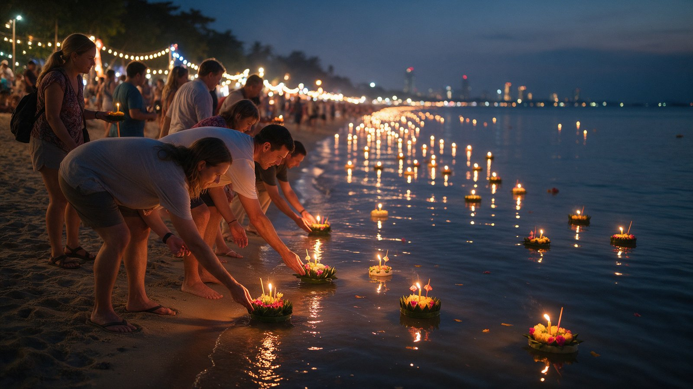
On the night of Tuesday 24 November, the full moon of the twelfth month, Jomtien Beach fills with candlelight from the krathong of local families, visitors and neighbours strolling by the sea — one of the warmest nights of the Jomtien year.คืนวันอังคารที่ 24 พฤศจิกายน วันเพ็ญเดือนสิบสอง หาดจอมเทียนจะเต็มไปด้วยแสงเทียนจากกระทงของคนในชุมชน นักท่องเที่ยว และครอบครัวที่ออกมาเดินเล่นริมทะเล เป็นหนึ่งในคืนที่บรรยากาศของจอมเทียนอบอุ่นที่สุดของปี11月24日周二晚，十二月的满月之夜，中天海滩将洒满来自本地家庭、游客与海边漫步邻居们水灯上的烛光——这是中天一年中最温暖的夜晚之一。Вечером во вторник, 24 ноября, в полнолуние двенадцатого месяца, пляж Джомтьен наполнится светом свечей на кратонгах местных семей, гостей и соседей, гуляющих у моря, — одна из самых тёплых ночей года в Джомтьене.
We invite residents and friends of the project to choose krathong made from natural materials, so the sea in front of our home stays clean the morning after.ขอชวนลูกบ้านและผู้สนใจโครงการเลือกกระทงจากวัสดุธรรมชาติ เพื่อให้ทะเลหน้าบ้านของเราสะอาดต่อไปในวันรุ่งขึ้น我们邀请住户与关注项目的朋友选择天然材料制作的水灯，让我们家门前的大海在第二天清晨依旧洁净。Приглашаем жильцов и друзей проекта выбирать кратонги из натуральных материалов, чтобы море перед нашим домом оставалось чистым и на следующее утро.
Coming in December:ธันวาคมนี้:十二月预告：В декабре: Tomorrowland Thailand (11–13 Dec, Wisdom Valley) · Pattaya Countdown (29–31 Dec)
Copacabana Coral Reef Jomtien
385/16 Moo 12, Jomtien Second Road
Nong Prue, Bang Lamung, Chon Buri 20150
© 2026 Copacabana Coral Reef Jomtien. All rights reserved. © 2026 Copacabana Coral Reef Jomtien. สงวนสิทธิ์ทุกประการ © 2026 Copacabana Coral Reef Jomtien. 版权所有。 © 2026 Copacabana Coral Reef Jomtien. Все права защищены.